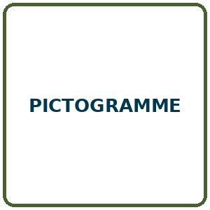
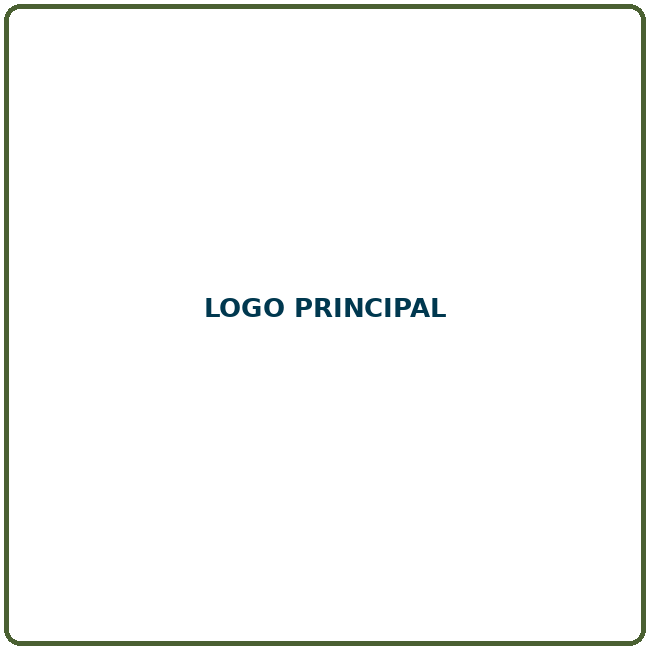
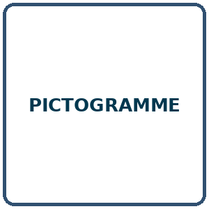

Vivre l’aventure
Apprendre des savoir-faire, vivre des projets et prendre progressivement une responsabilité.
Explorer →
Tu as choisi de vivre une grande aventure en équipe et d’apprendre à vivre en paix.

Apprendre des savoir-faire, vivre des projets et prendre progressivement une responsabilité.
Explorer →
Explorer la méditation, la discussion et la foi, guidé par la loi scoute.
Explorer →Prendre une responsabilité.
Marquer les étapes.
Apprendre pour agir.
Approfondir les savoirs.
Le Cléophas ouvre une porte, la loi donne une direction et le foulard rappelle d’agir.